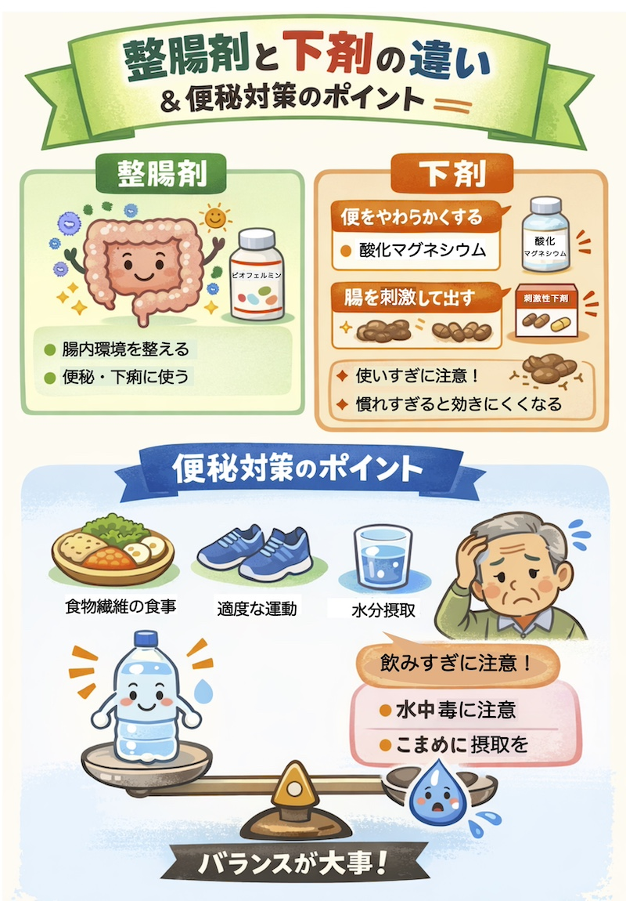

トップページに戻る
公開日：2026年7月｜最終更新：2026年7月
第1章 はじめに
便秘や下痢に対して、「整腸剤」や「下剤」が使われることがあります。
しかし、それぞれの役割は大きく異なります。ここでは、わかりやすく整理します。
第2章 整腸剤とは
腸内環境（腸内細菌のバランス）を整える薬です。
- 乳酸菌やビフィズス菌などを含む
- 腸の働きを穏やかに整える
- 便秘にも下痢にも使われる
代表例：ビオフェルミンなど
特徴
- 作用が穏やか
- 長期間使用しても安全性が高い
- 効果には個人差がある
第3章 下剤とは
排便を促すための薬です。作用の仕組みにより種類が分かれます。
(1) 便をやわらかくするタイプ
- 腸に水分を引き込み、便をやわらかくする（浸透圧性下剤）
- 習慣性が少なく、基本となる治療
代表例：酸化マグネシウム
(2) 腸を刺激するタイプ（刺激性下剤）
- 腸の動きを直接促進する
- 即効性がある
- 使いすぎると効きにくくなることがある
代表例：センノシド、ピコスルファート
第4章 整腸剤と下剤の違い
| 項目 |
整腸剤 |
下剤 |
| 目的 |
腸内環境を整える |
排便を起こす |
| 即効性 |
低い |
高いものがある |
| 長期使用 |
可能 |
種類により注意 |
| 便秘への効果 |
穏やか |
強い |

第5章 水分摂取との関係
便秘対策として水分摂取は重要ですが、飲みすぎには注意が必要です。
- 適度な水分（1日1.5〜2L程度）が目安
- 一度に大量に飲むのではなく、こまめに摂取
- 飲みすぎは体調不良の原因になることもある
特に高齢者では、水分の取りすぎによる体調変化にも注意が必要です。
第6章 実際の使い方の考え方
(1) 生活習慣（食事・水分・運動）を整える
(2) 整腸剤で腸内環境を整える
(3) 必要に応じて下剤を使用する
第7章 まとめ
- 整腸剤は「腸を整える」薬
- 下剤は「排便を起こす」薬
- 便秘には両方を上手に使い分けることが大切
- 無理な水分摂取や下剤の使いすぎには注意
便通の状態は個人差が大きいため、自分に合った方法を見つけることが重要です。
参考文献
- 日本消化器病学会「慢性便秘症診療ガイドライン」
- 厚生労働省 e-ヘルスネット（腸内環境・整腸剤に関する情報）
- 日本老年医学会（高齢者の水分管理・便秘対策に関する資料）
トップページに戻る